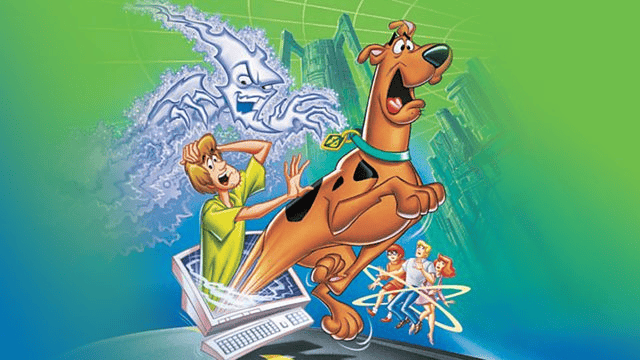

I’ve always liked this movie, it’s funny and had a good plot to it.
I think this movie is really funny and very different.
I love the action in this series and all of the costumes and characters. The actors do really well.
This is just a really good kids movie to watch with the littles.
I like all of the action in this movie I just get a little lost in some parts.
I think this is a really good funny “scary” movie to watch. It’s fun to try and guess the killer.
I like this movie but I really just like it because of the actors.
Again this is a good kids movie and has a good storyline to it.
I think this is a really dumb movie but it is also actually scary and I can’t seem to stop watching it around St. Patrick’s Day.
I’ve always liked the Scooby Doo movies and this is one of the better ones they have made.
